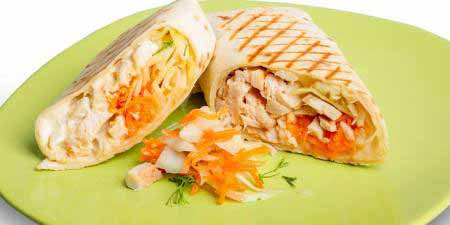
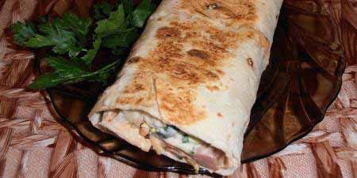
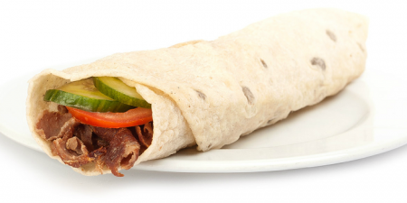
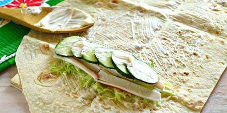

Як приготувати шаурму в домашніх умовах
Рецепт домашньої шаурми досить простий – це блюдо східної кухні настільки прижилося в Європі і навіть за океаном, що зустрічається майже в кожному куточку світу і має безліч варіантів приготування. Тонкий лаваш рясно змащують соусом або кетчупом, загортають у нього м’ясо, свіжі овочі і обсмажують з двох сторін на сухій сковороді. В якості начинки для вегетаріанської шаурми, яка користується популярністю у любителів здорового способу життя, використовують не менш апетитні інгредієнти – шпинат, петрушку, гриби, базилік і сир.
Інгредієнти
Список інгредієнтів, з яких готується шаурма в домашніх умовах, нерідко зустрічається в стравах колоритною східної кухні. Головним компонентом арабського делікатесу на швидку руку є м’ясо, частіше – птах (курятина, індичатина), баранина або яловичина. Щоб воно вийшло більш соковитим і ніжним, його варто попередньо замаринувати, а перед безпосередньою обсмаженням промокнути сухим рушником. Разом з м’ясом в коржик загортають капусту, листя салату, морква, свіжі огірки та інші овочі. Окремо роблять соус з арабськими спеціями, помідорами, часником.
Соус
Пікантний соус робить палітру смаків домашньої шаурми більш насиченою і багатою, дозволяє приховати певні похибки в технології приготування основних інгредієнтів. Наприклад, пересушена м’ясо, покрите щедрим шаром смачного часникового або томатного соусу, все одно вийде соковитим. Томатний соус робиться на основі свіжих помідорів, томатної пасти, зелені і практично будь-яких спецій, подрібнених в блендері з невеликою кількістю оливкової олії. Для часникового соусу змішайте майонез з часником, перцем, зеленою цибулею, натертим солоним огірком.
Як завертати
Щоб начинка не випадала на тарілку або одяг, а готова шаурма виглядала не гірше, ніж на фото з рецепту, необхідно належним чином її загорнути. Для цього важливо правильно вибрати і підготувати основу. Вірменський лаваш не повинен бути хрустким, занадто сухим, підсмаженою – в іншому випадку він буде кришитися або просто зламається. Його пом’якшують, злегка змочуючи водою або лимонним соком, намазують соусом, залишаючи трохи місця по краях. Викладають начинку, починаючи з овочевою «подушки», знову поливають соусом і накривають краями лаваша, після чого згортають рулетом.
Рецепти шаурми в домашніх умовах
Зараз складно назвати єдиний вірний рецепт шаурми в домашніх умовах – склад, пропорції, спосіб приготування, навіть назва цього смачного страви часто залежать від регіону. Наприклад, звичну для москвичів шаурму в Санкт-Петербурзі називають шавермой, а в Центральній Сибіру – денером. Тим не менш, один з головних принципів цього левантийского кебаба залишається незмінним – його їдять руками, не використовуючи столові прилади. Саму начинку з курячим м’ясом, ковбасою, сиром, яловичиною, крабовими паличками і іншими інгредієнтами загортають в лаваш або піту.
З куркою
- Час приготування: 30 хвилин.
- Кількість порцій: 4 персони.
- Калорійність страви: 334 ккал на порцію.
- Призначення: закуска, фастфуд.
- Складність приготування: легка.
Дієтичне куряче філе, не має яскраво вираженого смаку, заграє зовсім по-новому в ансамблі з хрусткими овочами, м’яким лавашем і фантастично ароматним соусом, який буквально тане в роті. Шаурма по-домашньому, зроблена з цим недорогим, корисним продуктом, стане улюбленою закускою всієї родини. Докладні рецепти з покроковими фото і рекомендаціями, як приготувати турецький кебаб, допоможуть створити маленький кулінарний шедевр, навіть не маючи за плечима серйозного кулінарного досвіду.
Інгредієнти:
- філе куряче — 300 г;
- помідори — 2 шт.;
- огірок — 1 шт.;
- кетчуп — 5 ст. л.;
- майонез — 4 ст. л.;
- часник — 2 зуб.;
- капуста білокачанна — 200 г;
- цибуля ріпчаста — 1 шт.;
- вірменський лаваш — 2 шт.;.
- спеції — за смаком;
- рослинна олія — 2 ст. л.
Спосіб приготування:
- Цибулю нарізати дрібними кубиками або півкільцями, швидко обсмажити в рослинній олії до прозорого стану.
- Філе ретельно промити, нарізати тонкою соломкою. Додати до цибулі на сковороду, перемішати зі спеціями, сіллю. Смажити 5-7 хвилин. Гарячу м’ясну заправку перекласти на тарілку, щоб курка не ввібрала залишки жиру.
- Капусту промити, нашаткувати, перекласти в глибоку миску. Змішати з половиною майонезу, посолити, поперчити. Магазинний майонез можна замінити домашнім.
- Перед тим, як приготувати соуси, дістати дві чисті миски. У першій змішати кефір, майонез і часник. У другій – кетчуп, спеції (не більше чайної ложки, щоб не перебити смак основного інгредієнта).
- Огірки та помідори нарізати пластинками або смужками.
- Розрізати лаваші навпіл. На кожну половину шарами викласти обидва соусу, шматочки обсмаженого філе з цибулею, салат з капусти з майонезом, свіжі овочі.
- На кожен шматок лаваша викласти огірки, капусту, ковбасу, помідори. Посипати сиром.
- Загорнути лаваш, обсмажити домашню шаурму з двох боків до золотистої скоринки.
З ковбасою
- Час приготування: 25 хвилин.
- Кількість порцій: 3 персони.
- Калорійність страви: 400 ккал на порцію.
- Призначення: закуска, фастфуд.
- Складність приготування: легка.
Соковита, ситна шаурма будинку – кращий спосіб вгамувати голод, не відчуваючи докорів сумління протягом дня. Це легке, всіма улюблене блюдо складно назвати низькокалорійним, але і до шкідливих продуктів віднести не можна. Класичні рецепти, як і варіація з ковбасою, є кращою альтернативою горезвісному бутерброду з товстим шматком хліба завдяки великій кількості свіжих або маринованих овочів. Вони насичені клітковиною і вуглеводами, дають енергію, відчуття ситості. Щоб швидкий перекус не надто позначилася на фігурі, ковбасу варто вибирати з мінімальним вмістом жиру.
Інгредієнти:
- ковбаса копчена — 200 г;
- сир твердий — 100 г;
- помідори — 2 шт.;
- огірки мариновані — 2 шт.;
- сметана нежирна — 200 г;
- капуста білокачанна — 150 г;
- вірменський лаваш — 1 шт.;
- спеції — за смаком;
- вершкове масло — 50 р.
Спосіб приготування:
- Ковбасу нарізати великими кубиками або довгими смужками.
- Капусту нашаткувати, змішати зі спеціями.
- Мариновані огірки нарізати кубиками. Якщо овочі невеликого діаметру – тонкими кружечками.
- Помідори вимити, обсушити. Нарізати кубиками або тонкими пластинками.
- Лист лаваша, в який загортають начинку, розрізати на три рівні частини. Кожну частину рясно змастити сметаною. Залишити на кілька хвилин, щоб «корж» з лаваша добре просочився і став більш м’яким.
- Натерти сир на середній або крупою тертці.
- На кожен шматок лаваша викласти огірки, капусту, ковбасу, помідори. Посипати сиром.
- Загорнути в трубочку або конверт. Смажити домашню шаурму на вершковому маслі, придавивши кришкою або тарілкою з вантажем по 5 хвилин з кожної сторони.
З сиром
- Час приготування: 30 хвилин.
- Кількість порцій: 4 персони.
- Калорійність страви: 220 ккал на порцію.
- Призначення: закуска, фастфуд.
- Складність приготування: легка.
Домашня шаурма в лаваші – це не тільки приємний перекус, але і можливість уникнути спокуси кожні п’ятнадцять хвилин відкривати холодильник у пошуках чогось їстівного. Смачний, гарячий конверт з сиром і овочами можна готувати навіть на сніданок, завдяки відносно невисокій калорійності. Його зручно носити в школу, на роботу, розігрівати в мікрохвильовій печі – тоді сир повністю розплавиться, з’єднавши всі інгредієнти. Щоб блюдо вийшло більш корисним, бажано відмовитися від використання вершкового, олії, віддавши перевагу сковороді гриль.
Інгредієнти:
- філе куряче — 500 г;
- сир м’який — 200 г;
- огірок — 1 шт.;
- кетчуп — 3 ст. л.;
- майонез — 3 ст. л.;
- морква — 1 шт.;
- листя салату — 1 пучок;
- вірменський лаваш — 2 шт.
Спосіб приготування:
- Філе вимити, обсушити рушником, нарізати на невеликі шматочки. Обсмажити на сухій сковороді з антипригарним покриттям.
- Змішати кетчуп і майонез, додати в сковороду до курки. Майонез можна використовувати домашній. Довести філе до готовності.
- Розрізати обидва лаваша навпіл, кожну частину намазати м’яким сиром.
- Листя салату замочити у воді, щоб осіли залишки бруду, а пісок потім не хрустів на зубах. Промити під проточною водою. Викласти на основу поверх сиру. Занадто великі листя можна порвати руками.
- Огірок порізати тонкими скибочками, викласти на салат.
- Моркву натерти на середньої або дрібної тертці, посипати зверху.
- На моркву викласти готову обсмажену курку в соусі з кетчупу і майонезу.
- Загорнути домашню шаурму. Обсмажити трубочки з двох сторін до рум’яної скоринки.
З яловичиною
- Час приготування: 60 хвилин.
- Кількість порцій: 2 персони.
- Калорійність страви: 520 ккал на порцію.
- Призначення: закуска, фастфуд.
- Складність приготування: середня.
Закуска з яловичиною, гострої морквою, крихітними корнішонами або маринованими огірками – знахідка, гідна не тільки повсякденного, але і святкової трапези. Особливо молодіжної на запальній вечірці, коли не хочеться сидіти за столом і возитися з приладами. Домашня шаурма готується буквально 15-20 хвилин – велика частина часу йде на те, щоб замаринувати м’ясо. Її можна брати в подорож і на відпочинок – страва не займає багато місця в кошику для пікніка, не бруднить руки, смачне в будь-якому вигляді, при необхідності може розігріватися навіть на багатті.
Інгредієнти:
- яловичина — 300 г;
- морква по-корейськи — 50 г;
- огірки мариновані — 2 шт.;
- кетчуп — 4 ст. л.;
- майонез — 4 ст. л.;
- часник — 2 зуб.;
- цибуля ріпчаста — 1 шт.;
- лимонний сік — 1 ст. л.;
- цибуля зелена — 5-6 пір’я;
- зелень петрушки — за смаком;
- олія соняшникова — 2 ст. л.;
- помідор — 1 шт.;
- капуста білокачанна — 100 г;
- вірменський лаваш — 1 шт.;
- сіль — за смаком.
Спосіб приготування:
- Яловичину вимити, обсушити. Видалити зайвий жир, прожилки. Нарізати довгими тонкими смужками, як на бефстроганов.
- Цибулину очистити, подрібнити вручну або в блендері до стану однорідної кашки.
- Змішати цибулю з лимонним соком, посолити. Перекласти в миску з нарізаною яловичиною, залишити маринуватися в холодильнику на 40-50 хвилин. Якщо є час, м’ясо можна занурити в маринад на 3-5 годин.
- Мариновані огірки нарізати тонкими смужками або кружечками.
- Помідор вимити, нарізати часточками.
- Свіжу зелень петрушки і зелену цибулю вимити під проточною водою, обтрусити, дрібно порубати.
- Капусту нашаткувати. Краще взяти молодий качан з ніжним листям.
- Часник пропустити через прес, змішати з майонезом, кетчупом. Якщо немає майонезу, можна приготувати його в домашніх умовах, а також просто змішати сметану з іншими інгредієнтами.
- Обсмажити м’ясо на сковороді, остудити.
- Розрізати лаваш навпіл, кожну половину змастити соусом.
- Зверху викласти капусту, зелень, яловичину, огірки, помідори, морква по-корейськи.
- Загорнути шаурму. Смажити до появи золотистого кольору.
З крабовими паличками
- Час приготування: 20 хвилин.
- Кількість порцій: 2 персони.
- Калорійність страви: 250 ккал на порцію.
- Призначення: закуска, фастфуд.
- Складність приготування: легка.
Варіант з крабовими паличками – не самий типовий, тому перед тим, як зробити шаурму будинку, варто уважно вивчити рекомендації та фото. Крабові палички бажано витягнути з холодильника хоча б за годину до приготування – різниця температур погано позначається на смак готової страви і консистенції соусу, особливо якщо продукт був заморожений. Рецепт настільки простий, що з ним впорається навіть дитина – складність може виникнути лише на останньому етапі. Нічого, крім обсмажування рулету на сковороді, для такої домашньої шаурми не потрібно.
Інгредієнти:
- сир твердий — 100 г;
- огірки — 2 шт.;
- майонез — 4 ст. л.;
- паста томатна — 2 ст. л.;
- крабові палички — 6 шт.;
- капуста білокачанна — 100 г;
- вірменський лаваш — 1 шт.;
- сіль — за смаком.
Спосіб приготування:
- Капусту нашаткувати, посолити. Ретельно перемішати.
- Крабові палички нарізати смужками або кружечками. Тонкі можна розрізати вздовж на 4 частини.
- Огірок нарізати пластинками або соломкою. Можна скористатися терткою для моркви по-корейськи.
- Сир натерти на крупній або середній тертці.
- Розрізати лаваш навпіл, кожну частину змастити томатною пастою.
- Викласти на томатну пасту капусту, подрібнені крабові палички, огірки. Зверху змастити магазинним або домашнім майонезом.
- Загорнути шаурму, обсмажити з двох сторін приблизно по 1 хвилині.
Успіхів в приготуванню шаурми!!!